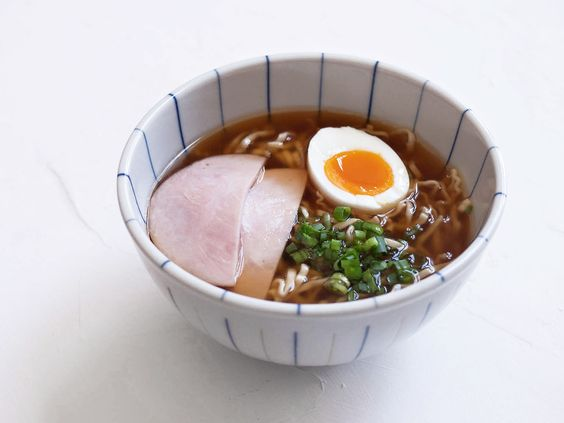

Ponyo's Ramen

Inspired by the sea and crafted with care, it's a taste of warmth and
nostalgia that transports you to the shores of Ponyo's magical underwater
world with every slurp.
A comforting bowl of steaming noodles swimming in savory broth, topped
with tender slices of pork, crisp vegetables, and a sprinkle of fragrant
green onions.
Ingredients:
- 1 instant ramen noodle packet
- 1 egg
- 1 green onion
- 1 piece ham
- 2.5 cups water
-
Prep the ingredients: Hard or soft boil the egg and cut in half, slice
the green onions, and cut the ham in half.
- Boil water in a kettle or on the stove.
-
Place ramen noodles in a bowl. If your ramen comes with a dry ramen
seasoning packet, open and put it in now.
-
Pour boiling water into the bowl. Cover the bowl and let it sit
according to the ramen package instructions (3-5 minutes).
-
Once cooked uncover and separate noodles using chopsticks or a fork. Mix
the water, noodles, and seasoning packet together well.
-
Top with half of the egg, sliced green onion, and both pieces of cut
ham.
- Enjoy immediately so the noodles don't get soggy!
Recipe by Sylvia Wakana. Check out the video tutorial on how to make
Ponyo's Ramen
here